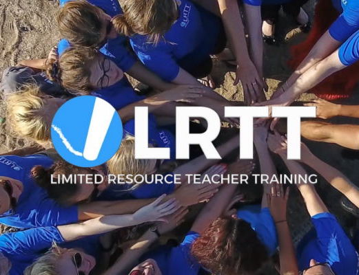

Ensure inclusive and equitable quality education and promote lifelong learning opportunities for all.
Target 4.c - By 2030, substantially increase the supply of qualified teachers, including through international cooperation for teacher training in developing countries, especially least developed countries and small island developing States
Overview - Obtaining a quality education is the foundation to creating sustainable development. In addition to improving quality of life, access to inclusive education can help equip locals with the tools required to develop innovative solutions to the world’s greatest problems. Over 265 million children are currently out of school and 22% of them are of primary school age. Additionally, even the children who are attending schools are lacking basic skills in reading and math. In the past decade, major progress has been made towards increasing access to education at all levels and increasing enrollment rates in schools particularly for women and girls.
Overview about Target 4.c: Quality teaching is essential to achieve all of the goals because teachers are the ones who are providing the information to the students. In my Primary Research example regarding the South African man whose teacher taught him incorrect English, forcing him to learn from magazines, the teacher was the main weak-point in the education system. This target is especially urgent because the lack of well-trained teachers in certain areas (especially underdeveloped areas) causes many of the other problems such as low literacy and numeracy rate. The target aims to have enough teachers with enough training. It is important that both boxes are checked.
—-—-—-—-—-—-—-—-—-— Charities —-—-—-—-—-—-—-—-—-—
Limited Resource Teacher Training
Every child has the right to quality education and teaching is the single biggest factor influencing learning in schools. LRTT runs teacher development programmes in low-resource contexts that equip and empower teachers to use evidence-based approaches in their classrooms every day. Since 2012, more than 2000 LRTT Fellows from around the world have joined LRTT, leading cross-border teacher development for 5000 teachers across 11 countries. Whether you’re new to the profession, or an old hand, all teachers are welcome. Having teams of Fellows with diverse skills and experience is what makes the Fellowship experience such a valuable one for all teachers.
Africa Teacher Foundation
The Africa Teacher Foundation was established in 2007 to help African teachers use best educational principles and practices to improve their curricular and instructional standards. These improvements will, in turn, enhance the quality of life for children residing in the poorest slums in East Africa. Participants from slum, rural, and national schools in Kenya, Tanzania, and Uganda receive ten days of professional development and support to learn varied approaches to meet the needs of all learners across the basic skill areas of literacy, mathematics, and writing.
—-—-—-—-—-—-—-—-—-— News —-—-—-—-—-—-—-—-—-—
Amélie Jézabel Mariage, United Nations Young Leader for the SDGs and Co-founder of Aprendices Visuales
United Nations Young Leader for the SDGs Amélie Jézabel Mariage discusses her inspiration in advocating for children's rights to access inclusive education, adding that “innovation in education is a proven path to inclusion and a bridge to opportunity.”
Madelle Kangha, United Nations Young Leader for the SDGs and Founder of JumpStart Academy Africa
I believe that educating and empowering young people everywhere, to become effective and productive members of society, is essential for sustainable growth and development.
SDG Advocate Her Highness Sheikha Moza bint Nasser, met with Antonio Guterres and Henrietta Fore at Hamad bin Khalifa University to discuss progress on SDG 4
SDG Advocate Her Highness Sheikha Moza bint Nasser, Founder and Chairperson of Education Above All Foundation met with the UN Secretary-General Antonio Guterres and UNICEF Executive Director, Henrietta Fore and discussed Sustainable development Goals progress and ongoing education efforts. Her Highness then attended the insightful lecture by the UN Secretary General.